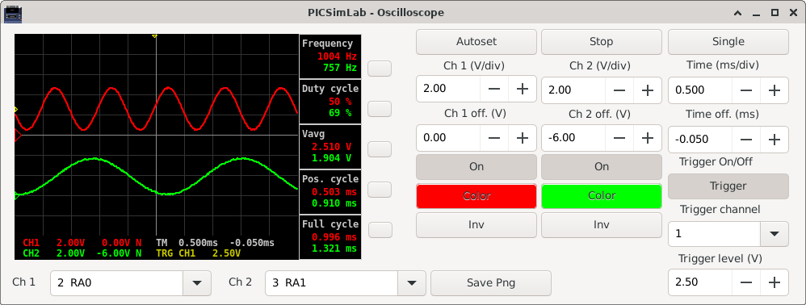

Chapter 8
Oscilloscope
The PICSimLab has a basic two-channel oscilloscope that can be used to view the signal on any pin of the microcontroller. The oscilloscope can be accessed through the “Modules->Oscilloscope” menu.

The oscilloscope supports up to 4 simultaneous measurements of the type:
- Vmax
- Vmin
- Vavg
- Vrms
- Frequency
- Duty cycle
- Pos. cycle
- Neg. cycle
- Full cycle